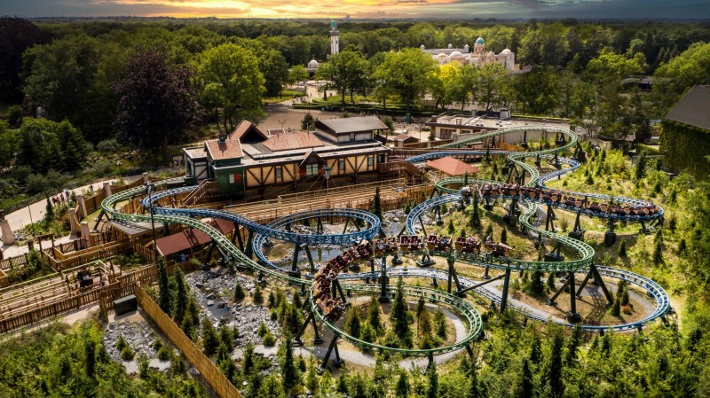
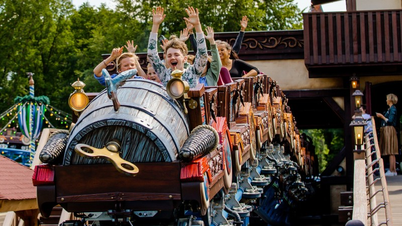
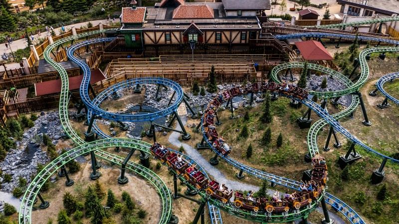
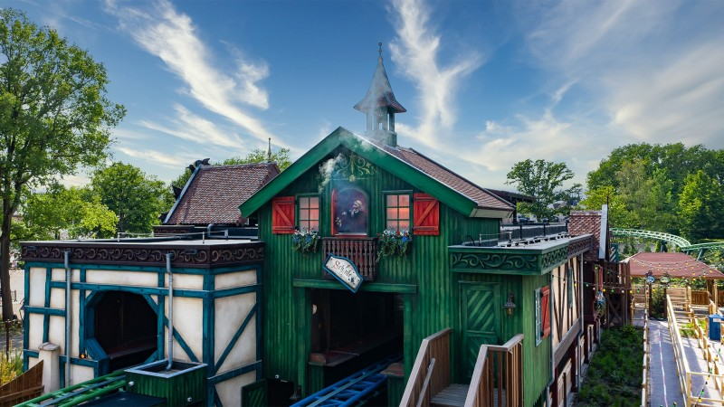
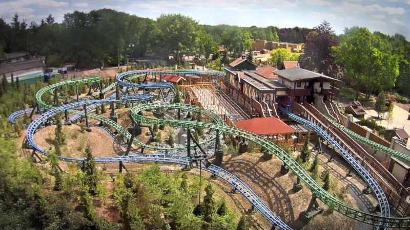

Max & Moritz
Familie-achtbaan
Wees op je hoede voor de streken van Max en Moritz
In de dubbele achtbaan Max en Moritz beleef je met de hele familie een spannende, doldwaze rit vol streken. Ontsnap samen met Max en Moritz uit de koekoeksklokkenwerkplaats in een van hun zeepkisten. Let onderweg goed op, want de kwajongens halen graag kattenkwaad uit! Welke baan kies jij, Max en Moritz?
Single rider wachtrij
Bij Max en Moritz is een single rider wachtrij aanwezig. Dit is een aparte wachtrij voor bezoekers die de attractie individueel bezoeken, waardoor lege plaatsen in voertuigen gevuld kunnen worden. Lees de 8 meest gestelde vragen en antwoorden over de single rider wachtrij.
| Mag ik op deze attractie? | |
|---|---|
| Voorwaarde | Toegang |
| < 1,00 m | Niet toegelaten |
| 1,00 m à 1,30 m | Met persoon van 16 of ouder |
| > 1,30 m | Geen voorwaarde |
| Zwangere vrouwen | Niet toegelaten |
| Babyswitch | Beschikbaar |
De galerij




